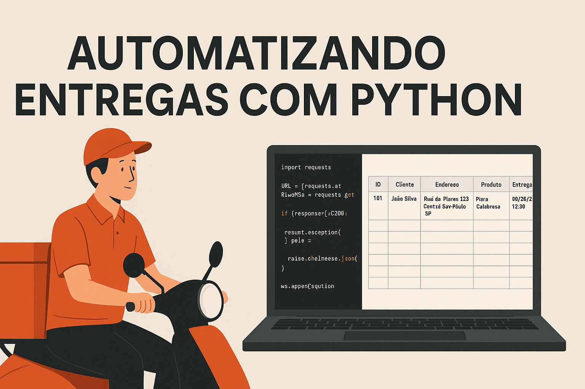

Como o Python Automatizou a LogÃstica de Entregas: Case Real de Transformação Digital
Zeca trabalha com delivery há 5 anos. Todo dia, a mesma rotina: papéis desorganizados, endereços confusos vindos do WhatsApp, pedidos duplicados e informações incompletas.
O resultado? Tempo perdido, stress operacional e redução na produtividade das entregas.
Até que surgiu uma proposta simples: automatizar todo o processo com Python.
A Transformação
CENÃRIO ANTERIOR:
- Pilhas de papel desorganizadas
- Endereços com erros de digitação
- Confusão com horários de entrega
- Perda de tempo organizando informações manualmente
CENÃRIO ATUAL:
- Processo automatizado com um clique
- Endereços padronizados e completos
- Horários de entrega claramente definidos
- Aumento na eficiência operacional
Implementação Técnica
Etapa 1: Consumo da API
O primeiro passo foi conectar o sistema com a API da empresa para obter os pedidos de forma automatizada:
import requests
def obter_pedidos():
response = requests.get("https://api.empresa.com/pedidos")
return response.json()Etapa 2: Geração de Relatório Excel
Com os dados obtidos, o sistema gera automaticamente uma planilha Excel estruturada e organizada:
from openpyxl import Workbook
def salvar_pedidos_excel(pedidos):
wb = Workbook()
ws = wb.active
# Cabeçalho
ws.append(["ID", "Cliente", "Endereço", "Produto", "Entrega"])
# Dados dos pedidos
for pedido in pedidos:
ws.append([
pedido["id"],
pedido["cliente"],
f'{pedido["endereco"]}, {pedido["cidade"]}',
pedido["produto"],
pedido["entrega_prevista"]
])
wb.save("entregas.xlsx")Estrutura do Relatório Final
A planilha gerada automaticamente contém todas as informações necessárias para as entregas, estruturada de forma clara e organizada:
- ID do pedido - Identificação única para controle
- Nome do cliente - Informação completa do destinatário
- Endereço completo formatado - Padronização automática
- Produto solicitado - Detalhes do que será entregue
- Horário programado para entrega - Organização temporal
Resultados Mensuráveis
A implementação da automação trouxe resultados concretos e mensuráveis para a operação:
- Produtividade: Redução de 30 minutos no tempo de preparação diária
- Precisão: Eliminação de erros de endereçamento
- Operacional: Melhoria na qualidade do processo logÃstico
- Financeiro: Aumento no número de entregas realizadas
Configurando o Ambiente Python + VS Code
Para replicar este projeto, você precisará configurar adequadamente o ambiente de desenvolvimento:
1. Instalação do Python:
- Download em python.org (versão 3.8 ou superior)
- Marque "Add Python to PATH" durante a instalação
2. VS Code + Extensões:
- Instale o Visual Studio Code
- Extensão "Python" (Microsoft)
- Extensão "Python IntelliSense" para autocompletar
3. Configuração do Projeto:
# Criar diretório do projeto
mkdir delivery-automation
cd delivery-automation
# Criar ambiente virtual
python -m venv venv
# Ativar ambiente (Windows)
venv\Scripts\activate
# Instalar dependências
pip install requests openpyxl4. No VS Code:
- Abra a pasta do projeto
- Ctrl+Shift+P > "Python: Select Interpreter"
- Escolha o Python do ambiente virtual criado
Pronto! Ambiente configurado para desenvolver soluções de automação.
A Visão da Cara Core sobre Automação LogÃstica
Na Cara Core Informática, entendemos que a automação de processos logÃsticos não é apenas sobre tecnologia — é sobre liberar potencial humano para atividades de maior valor.
O case do Zeca exemplifica perfeitamente nossa filosofia: identificar gargalos operacionais e criar soluções tecnológicas que geram impacto real e mensurável.
Questão para Reflexão
Quais processos repetitivos em sua organização poderiam se beneficiar de automação?
Compartilhe sua experiência nos comentários e vamos juntos identificar oportunidades de otimização.
Vamos Conversar?
Se você enfrenta desafios similares aos do Zeca ou possui processos logÃsticos que poderiam ser otimizados, a Cara Core Informática pode ajudar.
Entre em contato conosco para:
- Acesso ao código completo via contato: suporte@caracore.com.br
- Consultoria em automação de processos personalizados
- Discussão sobre soluções especÃficas para sua empresa
Sobre o Case:
Este é um projeto real desenvolvido pela equipe da Cara Core Informática, demonstrando como a automação pode transformar operações logÃsticas e aumentar a produtividade empresarial.
Código Fonte: O projeto completo está disponÃvel sob licença MIT. Para mais informações: suporte@caracore.com.br
Contato
- E-mail: suporte@caracore.com.br
- Site: www.caracore.com.br
- LinkedIn: Cara Core Informática